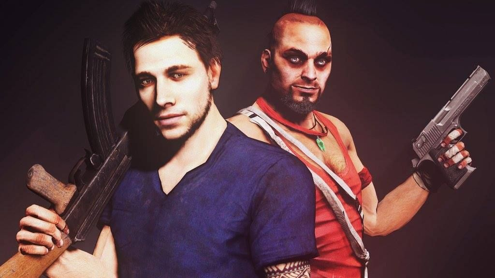

Rediscovering the Magic of Far Cry by Ubisoft - A Personal Journey Through the Series
Editing in Progress | Shabir Shabrez Noorani

I remember it like it was yesterday—my cousin handing me a copy of Far Cry 3 in late 2013, with a grin and the promise, "You're going to love this series." I didn't know then how right he was. As soon as I started playing, I was hooked. The game was immersive beyond anything I'd experienced at the time. I played it twice, completely mesmerized by the adventure. I even became so captivated by Jason Brody, the protagonist, that I insisted my friends call me "Brody" for a while. And Vaas Montenegro, the villain? His chaotic, magnetic presence was a work of art, keeping me glued to the screen every time he appeared. It wasn't just a game—it was an experience that had me reliving it year after year.
My gaming setup back then was a true testament to the saying, "where there's a will, there's a way." My Dell Inspiron 15R N5110 was not built for intense gaming, especially during the blistering Delhi summers, where the temperature easily soared to 46°C. The poor thing would overheat and shut down mid-session, and I had to get creative. I stacked books, put the laptop on top, and prayed the ceiling fan would do enough to keep my rig from collapsing. It wasn’t perfect, but it worked—at least until Far Cry Primal came out and my beloved Inspiron couldn't keep up. I remember feeling that pang of disappointment as I switched to mobile games, hoping for another chance to dive into the franchise someday.
Fast forward to 2024, a good friend lent me his PS4, and the magic began all over again. I had completely missed out on Far Cry New Dawn, which highlights Ubisoft's struggles with marketing and effective user acquisition. I was ecstatic to see the entire Far Cry series available on PS Plus. Naturally, I started with Primal, then moved on to Far Cry 5, and finally, Far Cry 6. But despite the improved graphics and larger worlds, something was missing. The thrill, the passion, the immersion that Far Cry 3 and Far Cry 4 offered just weren't there. Even today, as I sit here writing this article, my cousin and I are replaying Far Cry 4 because, despite the slightly outdated graphics compared to the latest games, it still has that magic.
Rediscovering the Heart of Far Cry
So, what happened to the Far Cry series? Why is it that the newer games—despite better visuals, bigger budgets, and more advanced technology—don’t feel as gripping as the earlier ones? As a digital marketer, I can’t help but look at this through the lens of engagement, storytelling, and market positioning. The Far Cry series has always been about giving players freedom—an expansive world where you could choose how to approach every mission, every conflict, every situation. But it feels like the marketing strategy, much like the game design, has shifted towards spectacle rather than depth. Let’s dig into how Far Cry can learn from its own history to reconnect with its audience.
The Power of a Personal Story
One of the main reasons Far Cry 3 resonated so much with me—and many others—was because of its characters and their stories. Vaas was more than just a villain; he was a character you loved to hate, a person whose unpredictability made you question your next move. The personal nature of his connection with Jason Brody made the stakes feel real. Ubisoft’s marketing around Far Cry 3 wasn’t just about an open world or the chaos you could create; it was about a journey—Jason's transformation from a tourist to a survivor. This emotional connection drove players to immerse themselves completely in the narrative.
Compare this with Far Cry 6, where the villain Anton Castillo, portrayed by Giancarlo Esposito, is undoubtedly charismatic, but the personal connection with the protagonist felt weaker. The marketing focused heavily on the grandeur of the world, the actor behind the villain, and the visuals, but not enough on why players should care about Dani Rojas or their struggle. In digital marketing, we know that storytelling drives engagement. It’s what makes people not just play a game but live in its world. Ubisoft could take a page from its own book by refocusing future marketing efforts on the personal journeys of its protagonists and the stakes they face—making players feel a part of something rather than just spectators in a grand conflict.
Gameplay Variety and Player Freedom
One of the key components that kept Far Cry 3 engaging was its variety in gameplay mechanics. Players had options—whether they wanted to stealthily take down an outpost or go in guns blazing. The inclusion of hunting, crafting, and exploring the island felt natural and rewarding. Each new activity provided a fresh challenge that kept players interested and motivated to see what lay beyond the horizon. This is where the magic of Far Cry was most alive: a constant sense of wonder and discovery.
Far Cry 4 continued this trend, introducing new ways to traverse the environment, such as the use of a gyrocopter and a grappling hook, which allowed for vertical exploration of Kyrat’s beautiful mountain terrain. Players felt empowered to tackle missions and objectives on their terms. The map itself felt like a living, breathing entity, with random events and dangers lurking around every corner.

Despite its criticisms, Far Cry 5 brought some fresh and exciting elements to the series. The game introduced a more open structure, allowing players to tackle different regions of Hope County in any order they chose. This open-ended approach gave players more freedom, which was a positive evolution from the more linear progression of previous games. Additionally, Far Cry 5 introduced a co-op mode that allowed players to experience the entire campaign with a friend. This feature brought a new level of enjoyment and unpredictability, as players could strategize together or simply create chaos in the world of Hope County.
World-Building and Environmental Storytelling
Another reason Far Cry 3 left such an impression was its environment and world-building. Rook Island felt mysterious, dangerous, and alive. Players would come across enemies patrolling the roads, wild animals attacking villages, and secrets hidden throughout the jungle. The atmosphere was supported by a fantastic soundtrack that shifted depending on the situation—frenzied drums during combat, eerie melodies in dark caves, and tropical tunes while exploring. This attention to detail made players feel like they were in a real, albeit chaotic, place.
Far Cry 4 also maintained a strong sense of place. Kyrat, with its mix of vibrant landscapes and snow-covered mountains, was inspired by the Himalayas and felt unique compared to Rook Island. There was a cultural identity to Kyrat, complete with radio broadcasts, traditions, and a civil war that felt grounded in the environment. This level of immersion was critical to making players feel like they were not just playing a game but exploring a foreign land rich with stories and challenges.

Yara, the setting for Far Cry 6, was one of the most expansive environments in the series, with a mix of urban and rural areas that felt alive. The cities were bustling with people, propaganda, and soldiers, giving the game a sense of scale that was impressive. The inclusion of urban environments allowed for varied gameplay, ranging from stealth missions in the dense city streets to guerrilla warfare in the jungles. This diversity kept the experience fresh and helped make Far Cry 6 stand out from its predecessors.
Villains: The Heart of Far Cry
One thing that Far Cry has consistently done well is its villains. Vaas Montenegro from Far Cry 3 set the standard for the series. His psychotic charisma and the unpredictability of his actions made him one of the most iconic villains in gaming history. Pagan Min from Far Cry 4 was another well-crafted antagonist, with a playful yet threatening demeanor that kept players on edge. These characters were memorable because they were given ample screen time, strong motivations, and interactions with the protagonist that felt personal.
Crafting a Better Marketing Narrative
If Far Cry wants to recapture the magic of its earlier games, its marketing needs to evoke a sense of nostalgia while promising something fresh. Imagine a campaign that taps into the emotional highs of Far Cry 3—the thrill of exploration, the personal vendettas, the raw survival. Pair that with the vast, beautifully chaotic open worlds that the new technology allows for, and you have a winning formula. Ubisoft could benefit from showcasing not just the environments or the weapons but the journey—the protagonist's growth, the emotional rollercoaster, and the reasons why players should care.
Additionally, leveraging influencers who have a genuine connection to the series could help rebuild that lost authenticity. Instead of purely focusing on celebrity names, partnering with content creators who grew up playing Far Cry 3 and Far Cry 4 could help rekindle the emotional bond long-time fans have with the franchise.
Conclusion: Finding the Heart of Far Cry
As someone who’s spent countless hours stacking books under an overheating laptop just to stay in the world of Far Cry, I want to see the series thrive. The key lies in rediscovering what made it special: the personal stakes, the emotional journeys, and the community that rallied around those experiences. It’s about marketing not just a game, but an adventure—one where every player feels like the protagonist of their own story.
Ubisoft also needs to address issues within the gameplay itself, such as the overuse of repetitive mechanics like healing animations, which, while initially captivating, can become tiresome if not continually updated or diversified. These gameplay elements, alongside marketing challenges, need rethinking.
Titles like Far Cry 5 and Far Cry 6 had their strengths—expanded freedom in gameplay, innovative mechanics, and engaging co-op experiences—but their positives often weren't emphasized enough in marketing campaigns. Future titles need to focus on maintaining the balance between innovation and retaining what makes Far Cry special. A stronger focus on connecting with both existing fans and new audiences through authentic storytelling and targeted outreach could help reignite the passion that once defined the series.
The next Far Cry should take a more deliberate approach to creating an emotional bond between the protagonist and the antagonist, much like what we saw with Vaas and Jason in Far Cry 3. It’s these personal relationships and stakes that elevate the game from being just another shooter to an experience that players remember long after they put down the controller. By focusing on unique character dynamics, innovative gameplay, and a vibrant community-driven experience, Far Cry can once again become the powerhouse franchise it was destined to be.